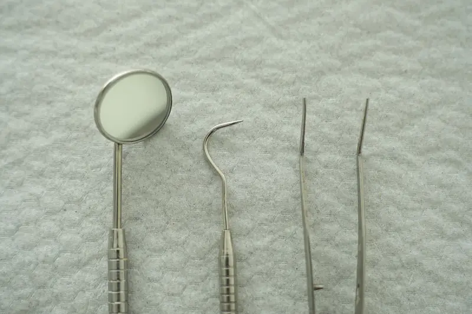

Every treatment, priced and timed.
Each one with its range in Singapore dollars before CHAS or MediSave, how long it takes, and what you will feel while it is done. The exact figure is written on the screen before we start, and it does not change during the visit.

Preventive
| Treatment | Range | Time | What you will feel |
|---|---|---|---|
| Check-up and consultation | S$38 – 60 | 15 min | A mirror, a probe and a conversation. Nothing numbs, nothing drills. |
| Scale and polish | S$80 – 110 | 25 min | A fine buzzing, cold water, mint. Gums can be tender that evening if it has been a while. |
| Bitewing X-rays, a pair | S$40 – 60 | 4 min | A sensor inside the cheek for four seconds a side. Awkward, not painful. |
| Fluoride varnish | S$30 – 45 | 5 min | A sticky coat painted on. Teeth feel fuzzy for an hour, then normal. |
| Fissure sealant, per tooth | S$40 – 60 | 10 min | The tooth is dried, painted and set under a blue light. No needle. |
| Night guard | S$280 – 420 | Two visits | A scan, not a putty mould. The guard takes about three nights to stop feeling foreign. |
Kids
| Treatment | Range | Time | What they will feel |
|---|---|---|---|
| First visit, under seven | S$45 – 70 | 20 min | A ride in the chair, a count of teeth, a sticker. If they open their mouth for ten seconds, that was the visit, and it was a good one. |
| Fluoride varnish | S$30 – 45 | 5 min | Painted on with a small brush. Tastes of nothing much. |
| Filling in a baby tooth | S$90 – 160 | 20 – 30 min | Numbing gel first, so the needle is barely felt. The lip feels big for an hour, which is funny for about a minute. |
| Baby tooth extraction | S$80 – 150 | 15 min | Usually over before they finish asking whether it has started. |
| Space maintainer | S$250 – 380 | Two visits | A small band and wire. A day of tongue-poking, then forgotten. |
Aesthetic
| Treatment | Range | Time | What you will feel |
|---|---|---|---|
| Whitening, in the clinic | S$650 – 900 | 75 min | A cold gel and a light. About one person in three gets zinging sensitivity for a day. We say so before, not after. |
| Whitening, take-home trays | S$380 – 480 | Two visits | Trays worn an hour a day for two weeks. Slower, gentler, the same shade in the end. |
| Composite bonding, per tooth | S$180 – 320 | 30 – 45 min | Usually no needle. Some flashes from the curing light and a lot of polishing. |
| Porcelain veneer, per tooth | S$1,200 – 1,800 | Two visits | Numb for the shaping. A temporary for ten days that you will be told not to bite apples with. |
Restorative
| Treatment | Range | Time | What you will feel |
|---|---|---|---|
| Composite filling | S$120 – 260 | 20 – 40 min | The needle is the worst part and it is ten seconds. Drilling is pressure and sound. Numb for about two hours afterwards. |
| Inlay or onlay, ceramic | S$800 – 1,200 | Two visits | Like a large filling, made in a lab and glued in a week later. |
| Crown, ceramic | S$1,100 – 1,600 | Two visits | Shaping under anaesthetic, a scan instead of a putty mould, a temporary for two weeks. |
| Partial denture, acrylic | S$600 – 1,200 | Three visits | A week of feeling like you have a mouthful. Then you forget it is there. |
| Partial denture, cobalt-chrome | S$1,400 – 2,200 | Four visits | Thinner and lighter than acrylic. The fittings take longer because the metal has to be exact. |
Root canal
| Treatment | Range | Time | What you will feel |
|---|---|---|---|
| Front tooth | S$650 – 850 | One visit, 60 min | The ache that brought you in is usually gone by the next morning. |
| Premolar | S$850 – 1,050 | One or two visits | Longer than a filling, quieter than one too. A rubber sheet keeps the tooth dry and your tongue out of the way. |
| Molar | S$1,050 – 1,400 | Two visits, 60 – 75 min each | Long, boring, not painful. Bring headphones. A crown afterwards is usually needed and priced separately. |
| Retreatment of an old root canal | S$1,200 – 1,700 | Two visits | Slower than the first time, because the old filling comes out before the new one goes in. |
Oral surgery
| Treatment | Range | Time | What you will feel |
|---|---|---|---|
| Simple extraction | S$120 – 250 | 20 min | Pressure, and a noise you feel more than hear. No pain if the numbing is right, and we check that it is before we start. |
| Surgical extraction | S$450 – 700 | 45 min | Numb. Stitches that dissolve in a week. Swelling peaks on day two and is gone by day five. |
| Wisdom tooth surgery, per tooth | S$850 – 1,350 | 45 – 60 min | As above, with more of day two. MediSave-claimable within the Ministry of Health limits. |
| Gum surgery, per quadrant | S$600 – 950 | 60 min | Numb throughout. Soft food for a week, and the gums look better than they feel for the first three days. |
Implants
| Treatment | Range | Time | What you will feel |
|---|---|---|---|
| Single implant with crown | S$3,800 – 5,200 | Three visits | Placing the implant takes 45 minutes and is quieter than an extraction. Then four months of nothing while the bone grows round it. |
| Bone graft, if needed | S$800 – 1,500 | With the implant | Adds a stitch and a few more days of swelling. |
| Implant-retained lower denture | S$7,500 – 9,800 | Five visits | Two implants and a denture that clips on. The first meal where it does not move is the one people remember. |
CHAS, MediSave and Baby Bonus, accepted at the counter.
CHAS cards (Blue, Orange, Green, Merdeka Generation and Pioneer Generation) take the subsidy off at the counter. The amount depends on the card and the procedure, and you are told the net figure before you start. MediSave can be used for the surgical items above, within the Ministry of Health claim limits. Baby Bonus CDA accounts can pay for children's treatment here. Beyond that: cash, NETS, PayNow, Visa and Mastercard. No instalment plans, no packages, no memberships.
If you only remember one number from this page, make it 38: that is the minute of a first visit when you see the price for anything we suggest, before you decide.